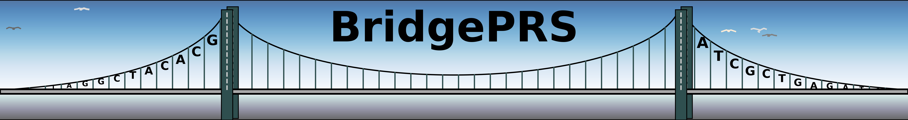

Input Data
LD Reference Data: Custom Data
BridgePRS estimates SNP-specific LD in the clumping step from multi-population target data in PLINK binary format.
BridgePRS includes sample thousand genome data (BRIDGEDIR/data/kg_sample) for super-groups (AFR and EUR). A full dataset and corresponding population-id lists (AFR.ids.txt, EUR.ids.txt, EAS.ids.txt, SAS.ids.txt) can be downloaded here and unzipped into BRIDGEDIR/data/kg_ref to enable full use of BridgePRS for the above populations (AFR, EUR, EAS, SAS).
To pass user supplied LD reference data, for a custom population named POP, please create folder (named pop_ld) which includes:
- A .bed, .bim, and .fam file for each chromosome with format "chr"[1-22]".ext"
- POP.ids.txt, a txt file that lists all the sample IDs for your population
Then use the command line argument --ld_path to point to the location of this folder on your computer.